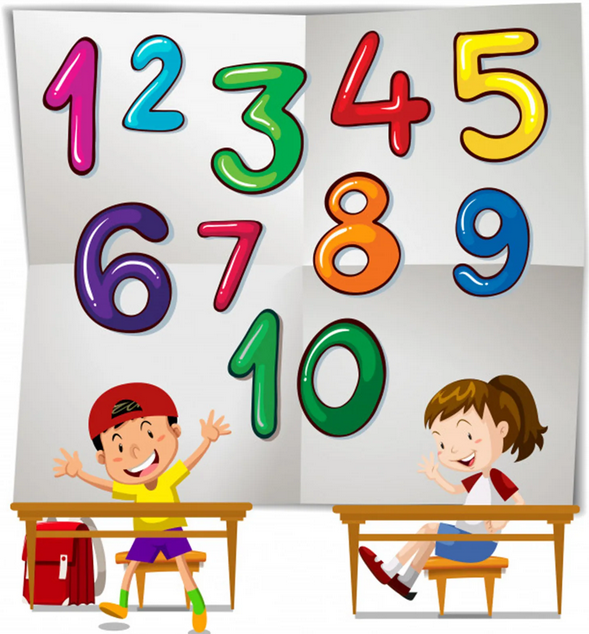
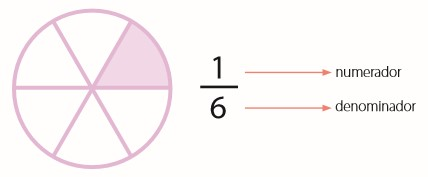
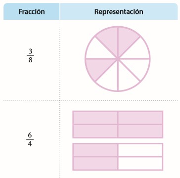
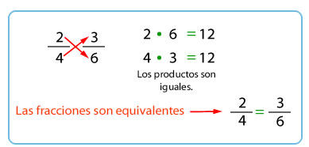
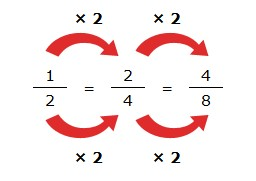
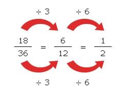

Una fracción o número fraccionario en matemáticas es la forma de expresar una cantidad que está dividida. Todos los números fracciones forman parte del grupo de los números racionales y se utilizan para la representación de medidas. Debido a que, muchas veces es más fácil expresar un número de esta forma que convirtiéndolo en un decimal exacto. Finalmente es de destacar que este no es un tema desconocido para ti ya que las fracciones se aprenden inicialmente en la escuela Primaria.
¿Qué es una fracción?
Una fracción es una representación de un número que significa o indica que representa una o varias partes iguales de una unidad o un conjunto.

¿Cuáles son los términos de una fracción?
Son el numerador y el denominador.
Denominador: indica el número de partes iguales en que se divide la unidad o el conjunto. Numerador: indica el número de partes iguales que se toman de la unidad o el conjunto.
Representación gráfica de fracciones:

¿Qué son las fracciones equivalentes?
Las fracciones equivalentes son aquellas fracciones que representan la misma cantidad como se ve en la figura.
¿Cómo sabemos si dos fracciones son equivalentes?
Dos fracciones son equivalentes si al multiplicar el numerador de una y el denominador de la otra los resultados son iguales.

¿Cómo podemos calcular si una fracción es equivalente?
Por amplificación
Multiplicando el numerador y el denominador por el mismo número.
Por ejemplo, partiendo de la fracción 1/2 y multiplicando el numerador y el denominador por el mismo número, podemos obtener diferentes fracciones equivalentes.

Por simplificación.
Dividiendo el numerador y el denominador por el mismo número.
Por ejemplo, partiendo de la fracción 18/36 y dividiendo el numerador y el denominador por el mismo número, podemos obtener diferentes fracciones equivalentes.

Este proceso es tan útil como el anterior, pero siempre termina cuando llegas a una fracción irreducible, es decir que ya no podemos realizar más divisiones posibles; en el ejemplo anterior, precisamente, es 1/2.